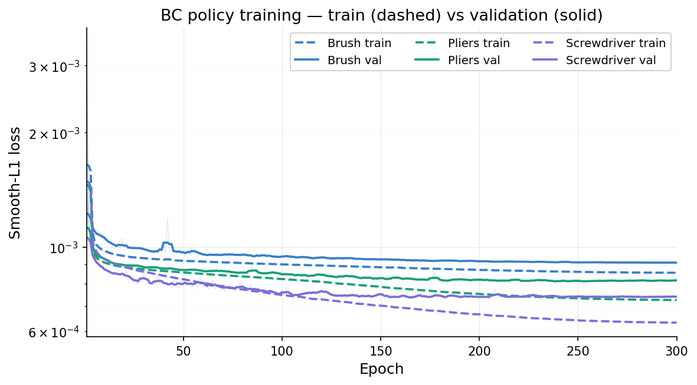
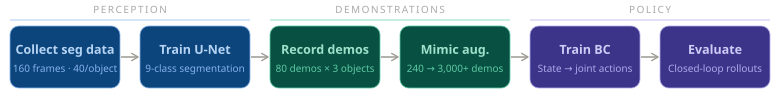
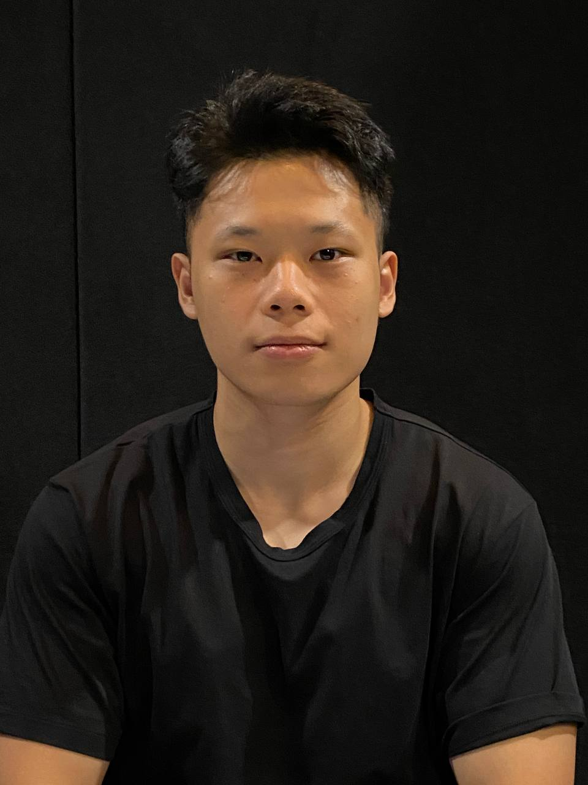
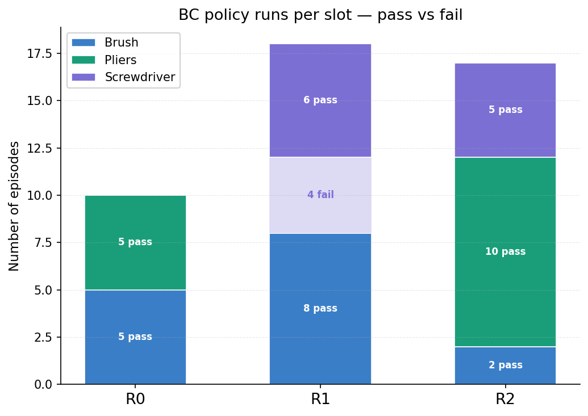
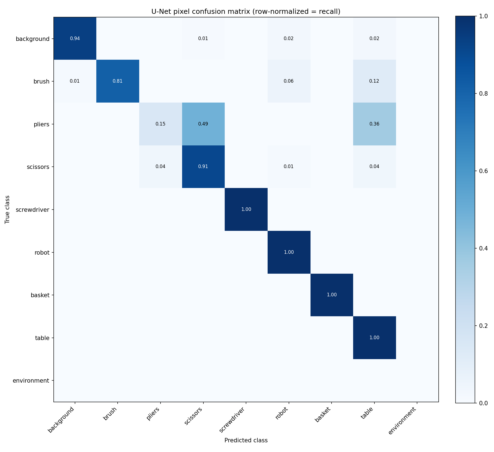
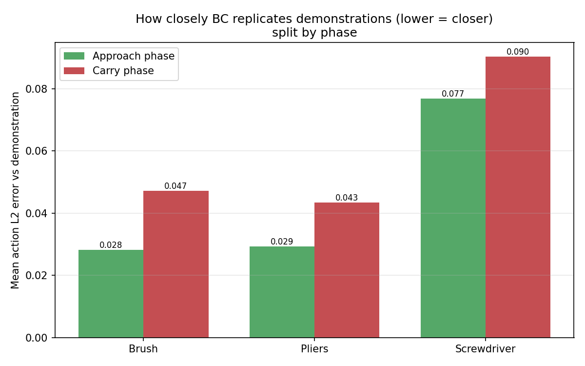

Training Loss
BC policy training and validation loss over epochs.

Built on NVIDIA Isaac Sim 5.1 and Isaac Lab 2.3.2, a Franka Emika Panda clears four tools (brush, pliers, scissors, screwdriver) from a Robotis pegboard into a basket — combining CNN perception with imitation learning. The pipeline has six stages:


This project addresses vision-based robotic manipulation in simulation: a Franka Emika Panda arm must clear four similar tools (brush, pliers, scissors and screwdriver) from a Robotis pegboard and place each one into a basket. The robot perceives the scene with a convolutional neural network, selects which tool to pick (ordering the detected tools by their proximity to the basket), and carries out each pick-and-place with a learned control policy.
We work entirely in simulation using NVIDIA Isaac Sim and Isaac Lab. A U-Net semantic-segmentation network is first trained to localise each tool from camera images (160 labeled frames, 40 per object). Expert grasps are then recorded through keyboard and VR teleoperation and amplified with Isaac Lab Mimic — roughly 240 human demonstrations (80 per object, 3 objects) are expanded into over 3,000 synthetic trajectories. A per-tool Behavioural Cloning (BC) policy is finally trained on this data, mapping the robot’s state to joint-space actions.
The video below demonstrates the full pipeline from data collection to policy evaluation.
BC policy training and validation loss over epochs.

Per-slot pass/fail breakdown across all three tools. Solid = success, faded = failure.

Segmentation model accuracy across all object classes.

How closely the BC policy replicates human demonstrations per object.

Annotation survival and generation quality per tool. Pliers required aggressive filtering (72% clean) due to the awkward grasp angle causing trajectory inconsistencies.

The behavioural-cloning policies complete the task end-to-end, with success rates of about 53% (brush), 61% (screwdriver) and 33% (pliers); training and validation loss converge without over-fitting. Isaac Lab Mimic was central — roughly 240 human demos (80 per object, 3 objects) became over 3,000 synthetic trajectories (~13×), without extra human effort.
Limitations. The main weakness is the carry phase: action error is higher after the grasp than before it for every tool, reflecting covariate shift once the gripper holds the object. Results come from only ~9–15 rollouts per tool, so the Wilson 95% intervals are wide and indicative; everything is in simulation and untested on a physical Franka, and the segmentation model is camera-specific.
Future work. Fine-tune the policies with reinforcement learning (PPO) under a shaped reward (grasp + lift progress) to fix the carry phase, run more evaluation episodes to tighten the intervals, and apply domain randomisation toward sim-to-real transfer.
Requirements: NVIDIA Isaac Sim 5.1.0 and Isaac Lab 2.3.2 (Python 3.11), a CUDA GPU (≥16 GB VRAM recommended), Ubuntu 22.04 or Windows 11.
Setup:
git clone https://github.com/Kaung-dev/AI_Robot_Manipulation_UR3e.git
cd AI_Robot_Manipulation_UR3e
cp .env.example .env # set ISAACLAB_PATH to your Isaac Lab install
source .env
./setup_isaaclab.sh # links the custom tasks into Isaac Lab
Run the trained demo — first download the models + datasets from the
Data
bundle into checkpoints/ and datasets/:
./launch_air2.sh eval-sequential 10 --no_cnnExpected result: in the Isaac Sim viewer, the Franka Panda detects the tools on the pegboard, picks them in order, and drops each into the basket.
Full step-by-step instructions — including reproducing the whole pipeline (teleop → annotate → Mimic → train BC → evaluate) — are in GUIDE.md and the README.
@misc{air2franka2026,
title = {AI Robot Manipulation: Franka Pick-and-Place with Behaviour
Cloning and Isaac Lab Mimic},
author = {Thu, Kaung Myat and Suiwinata, Stephen and Tran, Dang and
Wijaya, Declan and Choo, Hayden},
year = {2026},
note = {41118 Artificial Intelligence in Robotics, University of Technology Sydney},
howpublished = {\url{https://github.com/Kaung-dev/AI_Robot_Manipulation_UR3e}}
}